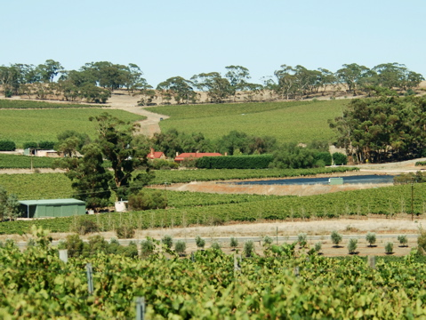
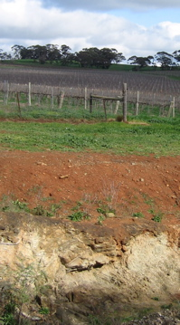
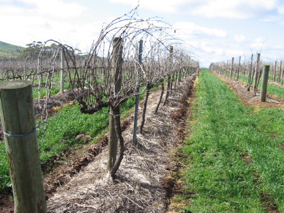
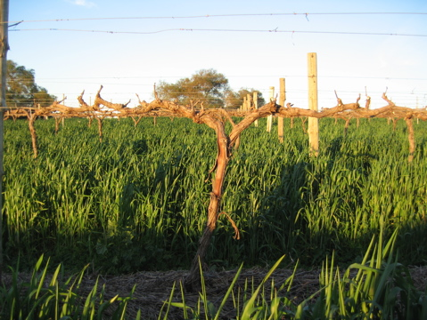
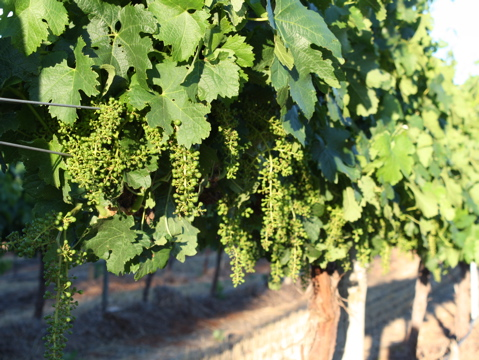
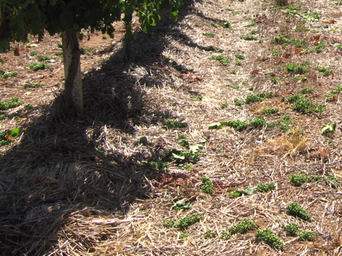
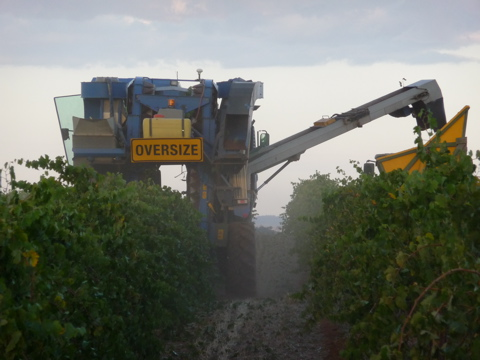

The Vineyard
Clare Valley has a long history of winemaking with vines first established in the region in the 1840s. The Clare Valley geographical indication (GI) is part of the Mount Lofty Ranges GI Zone and is not so much a valley as a series of mostly north-south ridges and valleys. The region encompasses quite a small area - only 35 kilometres north to south and ranging in width from 5-10 kilometres. The Clare Valley wine region is also relatively small in terms of planted area with only 4800 hectares under vine, which represents just 3 per cent of Australia's total vineyard area. Red varieties dominate - mainly Shiraz and Cabernet Sauvignon. Whites - mainly Riesling for which the area is famous - represent about one third of plantings.
At its southern edge, 110 kilometres north of Adelaide, is the historic town of Auburn.
The Clare Valley retains its rural character and has not been crowded by industrial or residential developments as with many other Australian wine regions. Well-known wine critic and author James Halliday compared the Clare Valley with Tuscany for its rustic flavour and Mediterranean climate.
The climate is moderated by the sea - the Clare Valley is only about 50 kilometres from Gulf Saint Vincent on the South Australian coast - with cool to cold nights and warm to hot summer days. Winter nights often fall below 0° Celsius. These changes in temperature are one of the factors giving Clare wines their unique character. Annual average rainfall is about 620mm - enough to sustain low-yielding, high quality vineyards without irrigation. Rain falls largely in winter and spring and the low humidity results in a low incidence of fungal disease and therefore minimum use of fungicides such as sulphur and copper.
 Wattle Farm's predominant soil type is 'terra rossa' - red brown loamy clay over limestone - typical of the Watervale district of the Clare Valley. The limestone was formed when the area was under the sea and then, over subsequent geological time, a loamy soil formed on the surface as winter rain leached the calcium out of the limestone and summer sun broke it down and coloured it red by dehydrating and oxidising the iron compounds left behind. This layer of terra rossa topsoil is rich and free draining but thin - often as little as 100 centimetres deep. Beneath the terra rossa soil is a band of calcrete: calcium carbonate leached out of the topsoil and redeposited immediately above the limestone. This calcrete layer, up to 10 centimetres thick, was ‘deep ripped' using a laser-guided bulldozer when Wattle Farm vineyard was developed, so that the vines' roots can access the porous limestone below. Vine roots penetrate many metres into the porous limestone as they search for water.
The mean January temperature is 21.9°C, similar to the Barossa Valley and McLaren Vale, Australia's other recognised Shiraz producers. This figure has been challenged in recent years on the basis that the data historically was from a meteorological station in an enclosed, paved courtyard. Hilltop vineyards such as Wattle Farm are likely to have lower long-term average January temperatures.
Following vintage the leaves change colour and, by late Autumn, fall from the dormant vines. During this period the vines take nutrients back into their root system to prepare for the next season.
Each year during the winter the vines are pruned by hand. This is the most important (and most expensive) viticultural operation, because it has a major influence on yield and quality. At Wattle Farm yield is limited to just a few tonnes per acre in order to maximise quality - as winemakers say, "great wine is made in the vineyard".
During the Spring the vines burst into life and after the shoots reach about a metre in length flowering starts. This is a critical few weeks in the growth cycle of the vine - the caps fall from the flowers and the fruit sets.
At Wattle farm the green bunches are 'thinned' to avoid crowding to ensure air and light reach the bunches. This practice is used by the best fine wine producers in France - where it is known as a vendange verte, or 'green harvest' - so that the vines are able to put their energy into developing the remaining grapes to maximise flavour intensity.
Veraison - when the grapes begin to ripen, soften and change colour - usually occurs in mid-January. The change in colour is due to the chlorophyll in the berry skin being replaced by anthocyanins (red wine grapes) and carotenoids (white wine grapes).
Wattle farm produces between 200 and 250 tonnes of grapes each year. Just a few tonnes are specially selected and hand picked for the wine bottled under the Wattle Farm label. The rest of the fruit is machine picked using large machines.
